Knitting Techniques
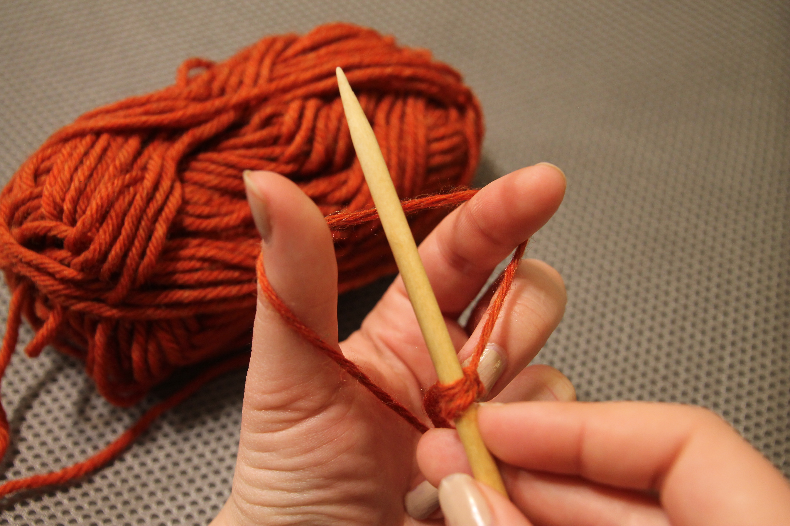
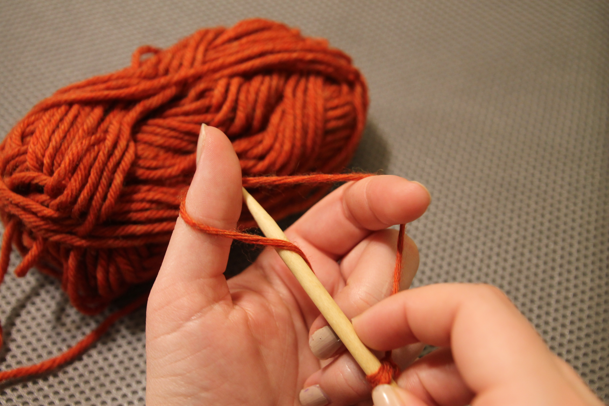
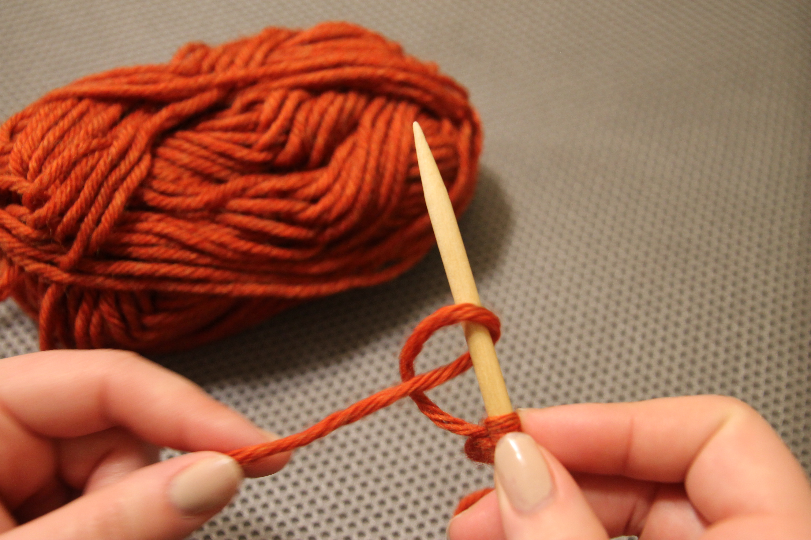
Casting On
First, tie a slip knot on one of the needles. The yarn leading to the ball of yarn is you leading strand, and the other end is your tail. Hold the needle in your right hand and drop the leading strand of yarn over your left thumb and forefinger, the yarn leading to the needle over your forefinger.
Hold the yarn draped over your thumb and leading to the ball of yarn with pinky and ring finger. Pull the needle around your forefinger towards your palm, making a triangle with the yarn.
Then tuck the needle under the yarn pinned by your pinky and forefinger. Drop the yarn from your fingers and pull the yarn tight, you should have made a loop around your needle.
Repeat this until you have the desired number of stiches, not counting the slip knot ties at the beginning.
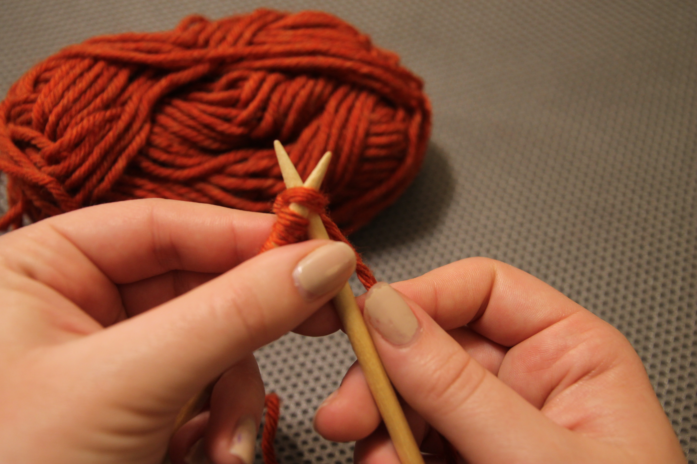
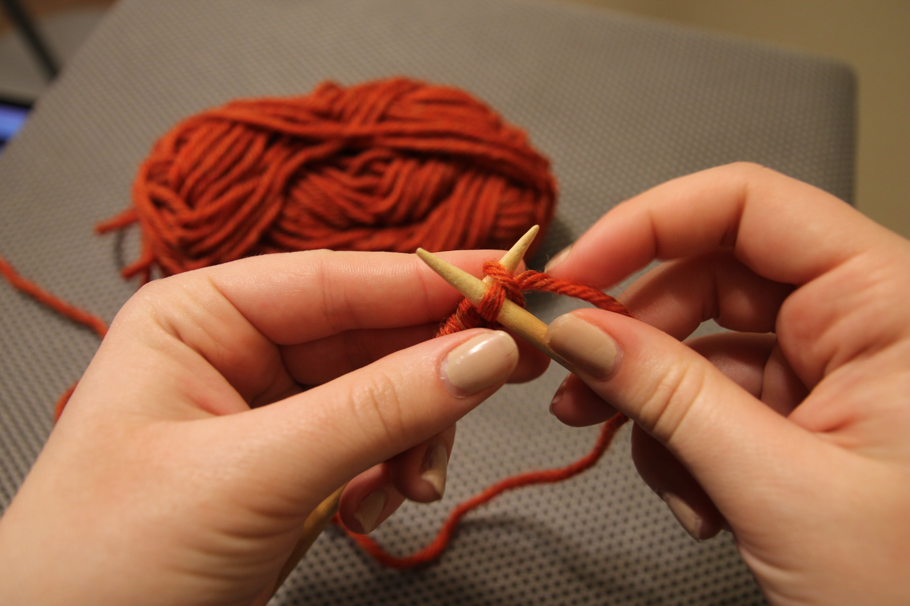
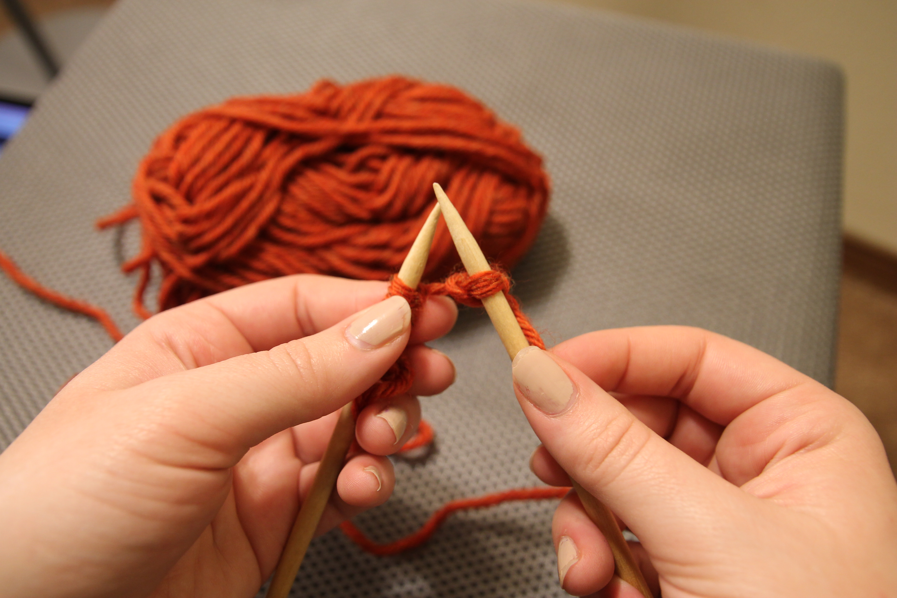
Knit Stitch
Hold the needle with the stiches in your left hand and hold your free needle in your right hand. Stick your right needle into the first stitch of your cast on row, inserting the needle from the bottom of the stich and up. Wrap the yarn counterclockwise around to the front of the free needle, not fully making a loop.
Then, slide the right needle down while holding the newly created stich on the needle. Turn the right needle sideways as you do and pull the new loop through the original stitch on the needle. Your right-hand needle will end up in front of needle holding all the stiches in your left hand.
Next, pull the stich slipped through the new stich off the needle using your right-hand needle. Pull the leading yarn to tighten.
Then continue this pattern across all of your stiches on the left-hand needle, and when you get to the end, switch the needled and use the free needled now in your right hand to do this across the needle in your left hand. Use the images above to help guide you.
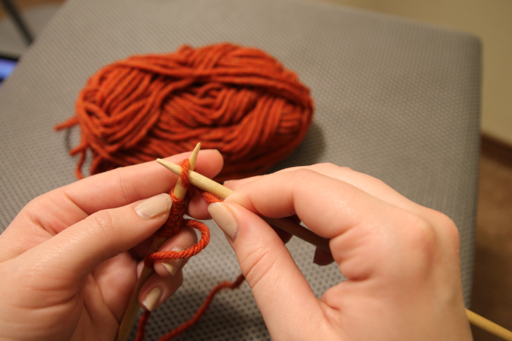
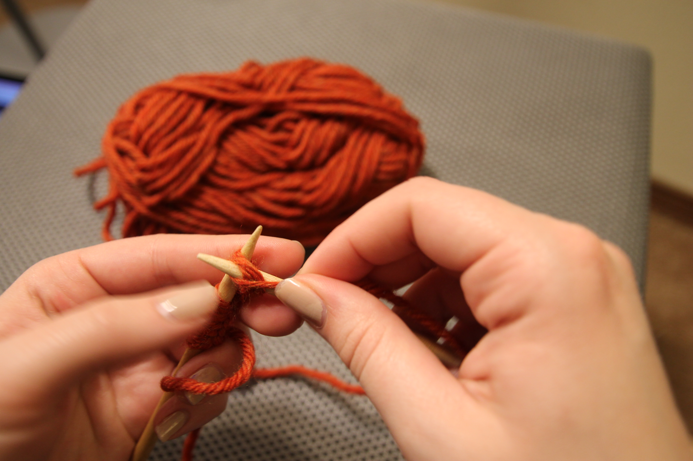
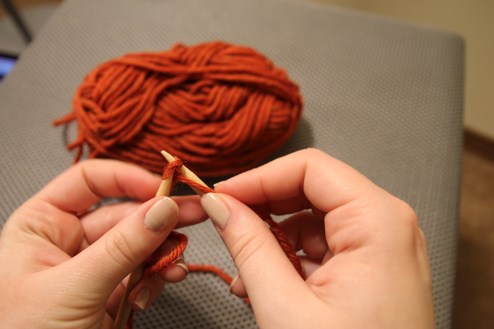
Purl Stitch
Start as you would for the knit stich, but instead of having the leading strand of yarn hang behind the needle, pull it to the front. Insert your needle through the first stitch from top to bottom, keeping the right-hand needle in front of the left.
Wrap the yarn around the needle counterclockwise starting from the top, this should again make half a loop around your right-hand needle.
Then bring the tip of the needle back through the original stich, keeping the new stich wrapped around the needle, this will pull it through the loop.
Next, pull the old stitch off the needle in your left hand using the right needle. Pull the leading strand to tighten and repeat.
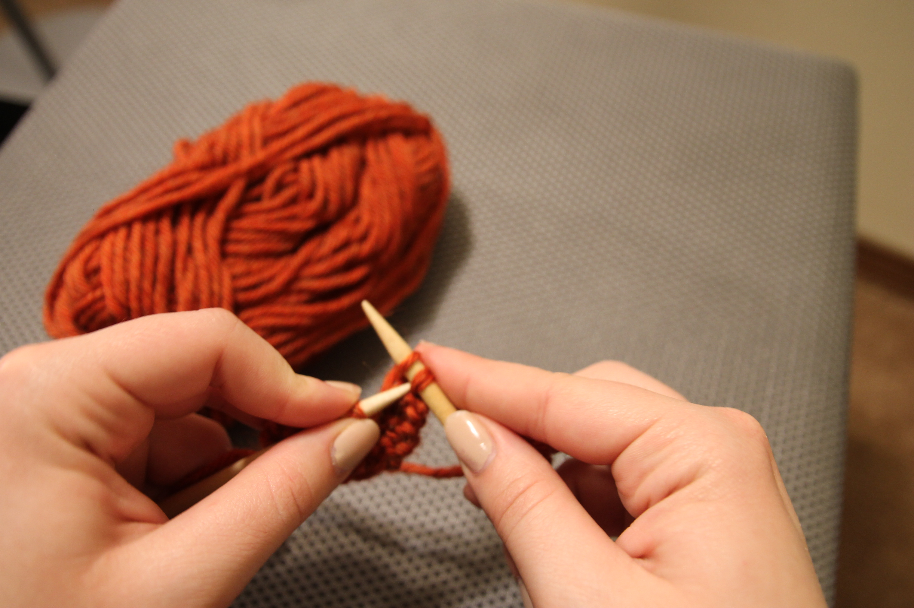
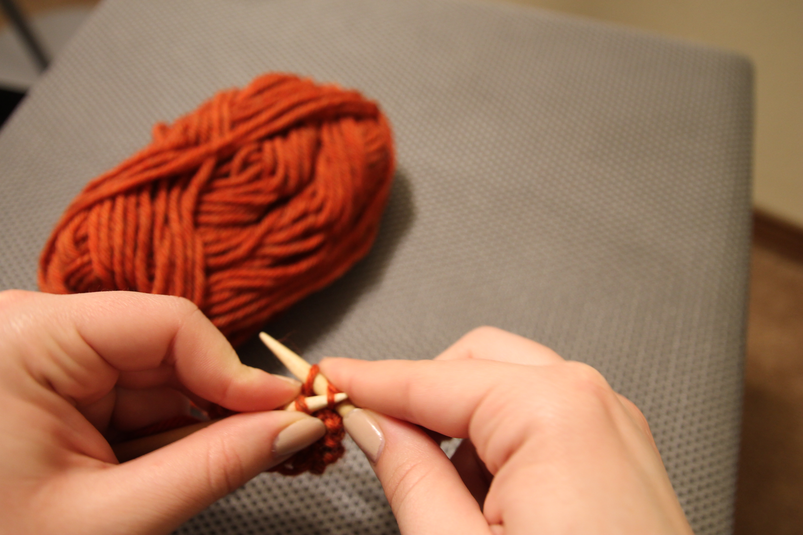
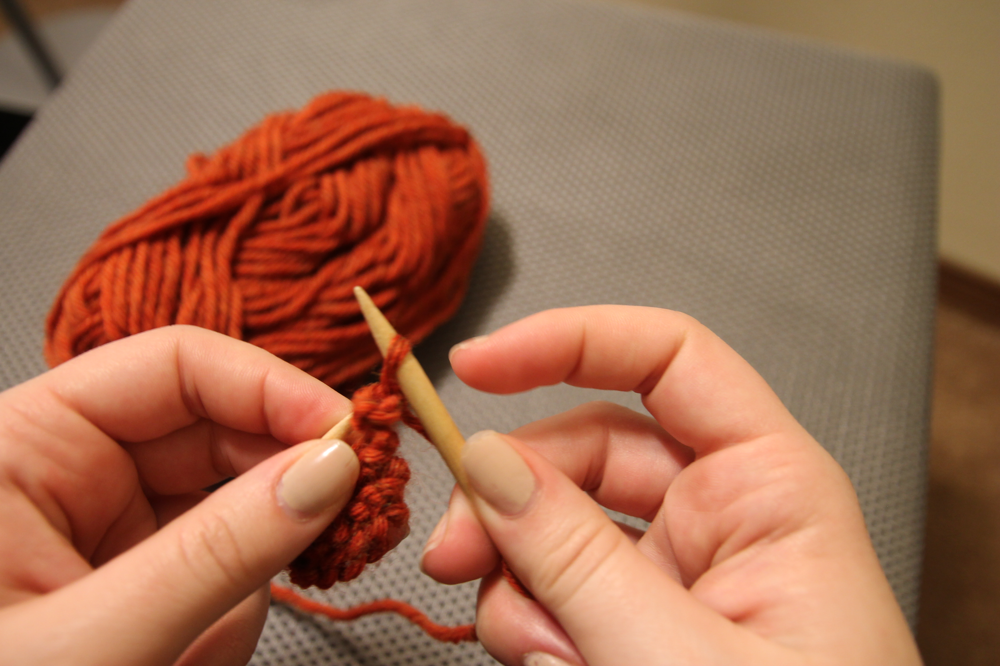
Casting Off
Knit two stitches using the knit stitch. After you have done that you will insert your left needled into the first stitch you made and pull it up and over the second stich you made and let it fall off your left needle. Your first stich will now be hanging around your second and you will only have one stich on your needle.
Now, knit another stitch from the left-hand needle. You will repeat the process of pulling the other stitch over the most recent one you knitted and letting it fall off the left-hand needle so it hangs off of the stitch on the right-hand needle. This will create a chain of loops and bind-off your piece.
 Knitting needles
Knitting needles
 Yarn needle
Yarn needle
 Circular Needles
Circular Needles